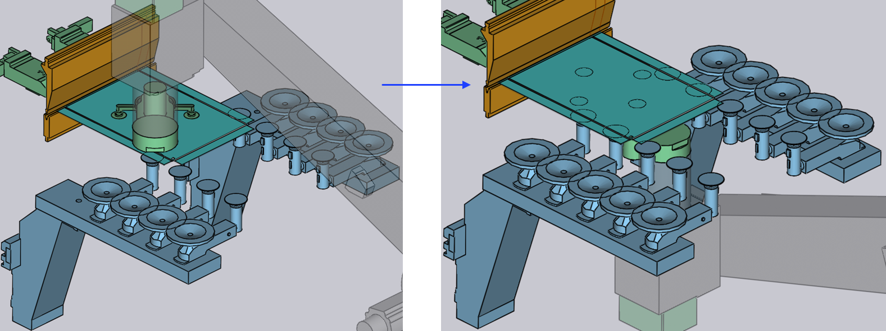

改抓面板

典型的改抓面板顯示在旁邊：
存取改抓面板：
-
在彎曲導航器中雙擊 R1 儲存格。
-
或者點擊在重新抓取位置由 BendMaster 夾具抓住的零件。
重新抓取的 方法
重新抓取零件的五種方法是：

-
Clamp
-
Clamp+Station
-
During Bend
-
Station
-
Post-Bend
Clamp
當您選擇 Clamp 方法時， 夾具依賴彎曲工具（沖頭和模具）來固定零件，完成旋轉順序， 然後從零件的另一側重新抓取。
Insert part first 和 BG: Z before X 已在 插入策略 中說明。

Clamp+Station
當您選擇 Clamp+Station 方法時，重新抓取在夾緊點進行，但也在支撐零件的 RG-Stations 上進行。
這種方法在彎曲長懸伸零件時很有用。

During Bend
在 During Bend 方法中，一旦彎曲 操作開始，夾具就開始同時旋轉（如果需要），並在彎曲操作 結束時精確執行重新抓取。
沖頭的打開僅在零件被機器人夾具牢固抓住時才開始。

Station
當您選擇 Station 方法時， 重新抓取通過支撐零件的 RG-工位進行。
這種方法在處理大尺寸零件時至關重要。

Post-Bend
當您選擇 Post-Bend 方法時， 重新抓取在彎曲過程之後進行，零件仍在夾緊點。
在這種方法中， 機器人夾具將在彎曲操作期間輔助零件。一旦彎曲操作 以預期結果完成，重新抓取操作將開始。

旋轉
在重新抓取操作期間，機器人夾具將零件放置在彎曲工具之間 或 RG-工位夾具上，然後移動到零件的另一側執行重新抓取。
為了防止碰撞，機器人夾具從零件、彎曲工具和 RG-工位略微抽離， 然後執行旋轉運動。這種抽離和旋轉運動以三種方式進行：
-
前面
-
左側
-
右側
下面的圖像顯示了夾具的抽離：

在此移動之後，夾具旋轉並移動到零件的底部，並執行重新抓取。